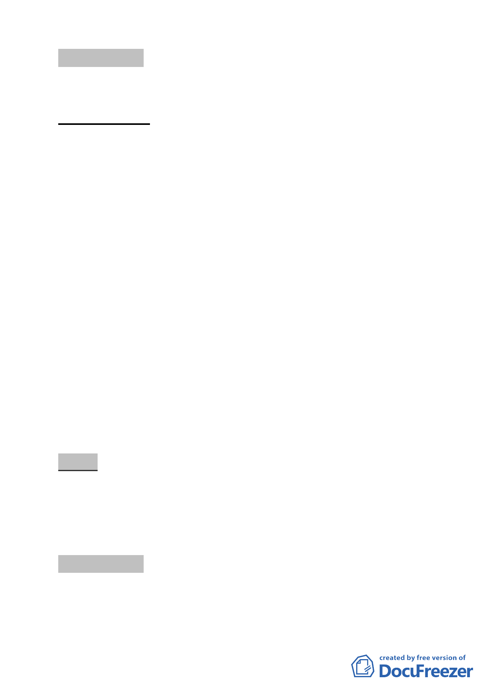

討論事項 十六
案名：劃定臺北市大同區雙連段一小段 607 地號等 26 筆土地為更
新單元
案情概要說明：
一、 本更新單元位於承德路二段以東、承德路二段 139 巷以北、
承德路二段 155 巷以南、雙連街以西所圍街廓之西側，面積
999 平方公尺，土地使用分區為住四之一。
二、 更新單元內計有 10 棟建築物、大多為 4 層樓建物，構造為鋼
筋混凝土造，屋齡超過 30 年。土地與建物權屬皆屬私有。目
前同意參與更新比例，土地所有權人 38.89%、合法建築物
所有權人 34.15%。本案基地建物老舊，土地利用不符周邊都
市機能、地區環境與景觀不良，周邊停車空間不足，影響防
救災之虞。更新計畫實施後，可促進土地合理利用、建立優
質街區環境、提供人行步行空間，強化防救災機能，活化地
區環境。
三、 本件係市府以 98 年 6 月 24 日府都新字第 09830667800 號函
送到會。
四、 申請單位：康瑞珍 君。
五、 辦理單位：臺北市政府。
六、 法令依據：都市計畫法第 66 條、都市更新條例第 5、6、8、
11 條暨臺北市都市更新條例第 15 條。
七、 本更新單元劃定業經市府審查符合更新單元劃定基準。
決議：
一、 本案更新單元劃定範圍照案通過。
二、 至於緊鄰建物部分，於計畫書內補述於都市更新事業計畫時
檢附結構技師檢討相關資料。
討論事項 十七
案名：劃定臺北市北投區振興段三小段 1016 地號等 22 筆土地為
更新單元
- 22 -